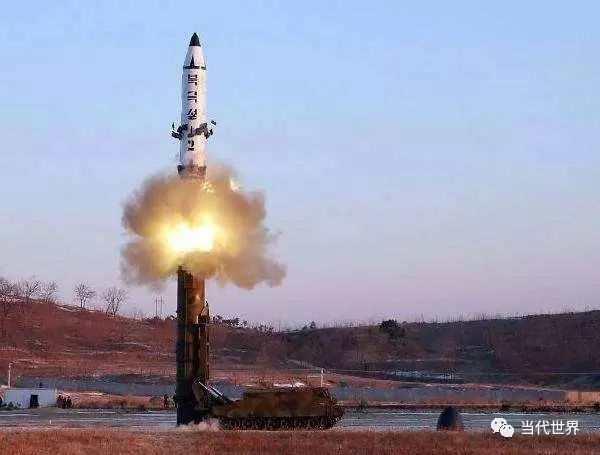
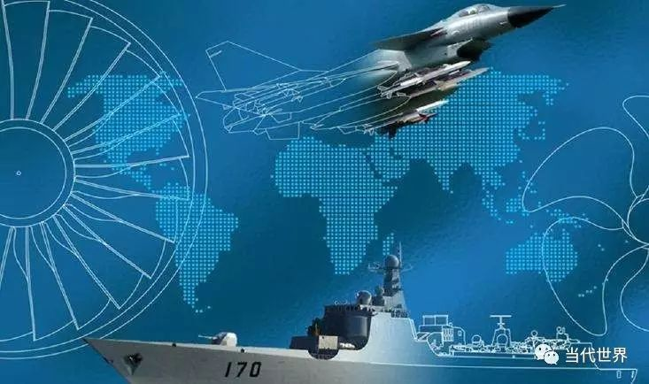
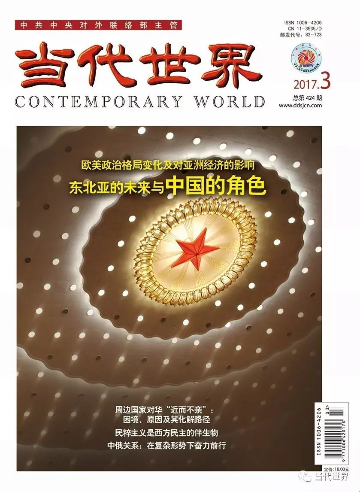

收录于合集
以下文章来源于当代世界 ，作者邹国煜
当代世界 .
《当代世界》杂志是中共中央对外联络部主管的国政类核心期刊，是深入阐释中央外交方针政策的重要理论阵地；是宣介中国特色大国外交特别是党的对外工作创新成果的权威传播载体；是深入研析世界形势、政党政治、国际格局发展变化和变革规律的专业智力汇聚场。
■ 本刊编辑部／策划 邹国煜／执笔
DOI: 10.19422/j.cnki.ddsj.2017.03.021
1
中美元首友好互动，“一个中国”原则不可动摇
2月8日，美国总统特朗普致信中国国家主席习近平，祝中国人民元宵节快乐、鸡年吉祥如意，并表示希望同中方发展互利共赢的建设性关系。10日，习近平主席与特朗普通电话，感谢祝福并对其积极拓展中美合作、发展建设性双边关系的态度表示赞赏。在随后长达45分钟的直接沟通中，两国元首就政治、经济等领域共同感兴趣的话题进行了广泛沟通，并就中美关系的重要性以及如何维护发展中美关系达成共识。习主席重申“一个中国原则”是中美关系的政治基础，特朗普则强调美国政府将坚持奉行“一个中国”政策。
特朗普上台后，“大刀阔斧”对前任奥巴马政府的诸多政策进行了调整，使很多传统双边关系都遭遇了一定程度的冲击甚至变故。中美关系也曾因“特朗普与蔡英文通话事件”等一度蒙上阴影。但作为特朗普就职后中美两国元首的首次通话，此次互动在时长、节奏和氛围上都拿捏得恰到好处，堪称“破冰”典范。尤其是双方对“一个中国原则”这一中美关系“压舱石”的再一次重申和确认，有力回应了外界对特朗普上台后中美关系未来走向的种种猜测，奠定了中美关系继续稳定发展的大基调，再一次证明了作为世界最大发展中国家和发达国家，中美需要、能够而且必须合作。同时，特朗普的积极表态，也一定程度上反映出其当选以来经过一连串碰壁之后，在对华态度问题上逐渐回归正轨。
2
TPP陡遇“急刹车”，“经济北约”前途未卜
近期，美国总统特朗普签署行政命令，宣布美国退出跨太平洋伙伴关系协定（简称TPP）。面对“带头大哥”美国的这脚“急刹车”，TPP“朋友圈”的小伙伴们内心复杂、反应不一：日本首相安倍晋三极力挽留，称“没有美国，TPP将失去意义”。墨西哥总统培尼亚似乎已准备好另谋出路，表示“美国退出后，TPP恐难生效，墨将立即与其他国家展开双边贸易谈判。”澳大利亚总理特恩布尔则决心在美国“缺席”的情况下团结其他成员国“复活”TPP。为此，特恩布尔甚至还向中国这一昔日TPP主要遏制目标伸出了“橄榄枝”。
“天有不测风云，友谊的小船说翻就翻”。美国对于TPP而言，可谓“成也萧何败也萧何”。2009年奥巴马政府宣布参加TPP谈判，秘鲁、越南、澳大利亚、日本、加拿大、墨西哥、马来西亚等国纷纷跟进。TPP这个新加坡、智利、文莱、新西兰四个小兄弟“抱团取暖”的“小火炉”，一下变成拥有12个成员国并占全球经济总量40%的“大太阳”。由于排斥、打压和孤立中国等新兴经济体的政治意图明显，其又被外界称为“经济北约”。美国此番任性“退群”，让TPP顿时陷入“还没开张就要散伙”的尴尬境地。其折射出的是新形势下美国实力已经支撑不起其独霸全球野心背后的无奈，以及TPP机制本身的某种不合理与脆弱性。由于TPP系多方复杂博弈产物，“后美国时代”到底是“树倒猢狲散”还是“卷土重来”，仍待进一步观察。
2017年1月23日，在美国华盛顿白宫，美国总统特朗普展示自己签署的行政命令，正式宣布美国退出跨太平洋伙伴关系协定（TPP）。
3
特朗普“禁穆令”惹麻烦，
美社会面临进一步撕裂
2017年1月末，美国总统特朗普签署名为“阻止外国恐怖分子进入美国的国家保护计划”的行政命令。要求自1月27日起，120天内暂停所有难民入境美国，90天内暂停向伊朗、苏丹、叙利亚、利比亚、索马里、也门和伊拉克七国普通公民发放签证，无限期禁止叙利亚难民进入美国。由于其针对的主要为伊斯兰国家，该政令也被称为“穆斯林禁令”（简称“禁穆令”）。此举招致民主党和克里、赖斯等前政要挞伐，全美多地爆发示威抗议，各大机场出现不同程度“混乱”，微软、谷歌、苹果、脸书等逾百家重量级企业联名反对该禁令。2月3日，华盛顿西区联邦法院宣布冻结“禁穆令”。特朗普不满裁决，向联邦巡回法院提起上诉。9日，巡回法院驳回上诉，维持原判。17日，特朗普宣布撤销“禁穆令”，并将根据法院的反对意见“量身打造”新的移民行政命令。至此，沸沸扬扬的“禁穆令”风波告一段落。
此风波表面是特朗普与“建制派”围绕移民政策的冲突，其背后所暴露的却是日渐抬头的保守主义倾向、不断加深的政治“极化”现象以及由此引发的“三权分立”背景下的法治原则之争。对于正面临进一步分化和撕裂的美国社会而言，这场风波没有赢家。正如外界传言，随着“禁穆令”的落幕，“美国正由合众国（United States）日益变为离心国（Divide States）”。
2017年1月29日，抗议者聚集在美国华盛顿白宫附近，抗议美总统特朗普日前签署的关于限制移民的行政命令。
4
“朝贡外交”暗藏深意，
安倍“小算盘”值得警惕
2月9—13日，日本首相安倍晋三访美，与美国总统特朗普举行首次正式会谈。据媒体披露，安倍此访向特朗普送上了“豪华大礼包”，内容包括今后十年内向美国基础设施领域投资1500亿美元，在美国创造70万个就业岗位和市值规模达4500亿美元的基建市场等。在TPP问题上，安倍也一改“前态”，不再坚持多边TPP，转而附议特朗普，拟在双边框架下展开贸易和投资磋商。日本国内对安倍的“卑躬屈膝”多有不满，并将此访称为“朝贡外交”。
安倍此番极力讨好特朗普，一方面是为了安抚曾“指责日本操纵汇率、威胁对日提高关税”的特朗普，以维持大规模量化宽松，挽救“安倍经济学”、尽力争取在日美双边经贸问题上的有利地位。另一方面，其背后也包含了试图以“朝贡”实现“拉美制华”的“小心思”。此前，美国新任国防部长马蒂斯、新任国务卿蒂勒森曾确认钓鱼岛在《日美安保条约》范围之内，但安倍并未安全放心。此番费尽周折，一定程度上就是为了得到特朗普的亲口表态，让其为自己“小算盘”背书。
5
**朝鲜再次试射弹道导弹，东北亚局势又添迷雾
**
2月12日，朝鲜试射一枚“北极星-2”型中程地对地弹道导弹。13日，联合国安理会召开紧急会议，谴责朝鲜发射新型弹道导弹，敦促朝鲜停止此类行动。朝鲜政府拒绝承认和接受安理会决议，称此系维护国家主权和民族生存权、保障朝鲜半岛和平与地区稳定的“自卫措施”。
由于发射恰逢美国总统特朗普上任之初，日本首相安倍晋三访问美国之时，朝鲜此举触动多方神经，引发各种猜测和解读。一方面，韩国因此又一次感受到“实实在在的安全威胁”，部署“萨德”系统的进程或将进一步加快。另一方面，美、韩当前均处于“易主”后的调整期和过渡期，相关国家的东北亚政策面临重新评估和制定。朝鲜此时“射导”，本意或欲借机获取更大筹码，在地区博弈中抢占主动。但相对于东北亚当前敏感、微妙而脆弱的地区平衡而言，此举无疑是“雪上加霜”。而“射导”次日一名朝鲜籍男子在马来西亚遇刺的桥段，似乎是某种巧合，进一步为这场紧张、复杂的博弈增添了不可预知和不确定的神秘因素。

6
“慕安会”热议“后西方”时代，
中国地位作用凸显
2月17—19日，一年一度的慕尼黑安全会议（简称“慕安会”）在德国举行。包括30多位国家元首、80位外交部部长和国防部部长在内的共500多人，围绕“后真相、后西方、后秩序”这一主题，就国际形势与安全合作各抒己见，为世界未来方向把脉开方。中国外长王毅应邀与会，并在全体会议上发表题为《坚持合作理念，作出正确抉择》的主旨演讲，着力阐述了中国对当今世界安全形势的基本判断，以及坚持多边主义、加强大国合作、完善全球治理、推进各类区域合作进程的应对方案。
此次会议在美国特朗普政府外交政策尚未明朗，欧洲国际秩序受英国“脱欧”、难民危机、民粹主义抬头等多重因素冲击，世界经济政治治理秩序面临进一步挑战等复杂背景下召开。“后西方”“后秩序”成为各方关注的核心概念，其背后既折射出西方对自己主导的世界秩序“正在走向终结”的深度担忧、焦虑和失落，也反映出世界对新秩序和新兴领导力量的期待和呼唤。作为当今国际战略和安全领域最重要的全球性政策论坛之一，近年来“慕安会”上的“中国声音”越来越响亮。这一方面当然是中国“硬实力”持续增强、在国际事务中地位作用不断上升的体现。同时也充分说明中国在国际社会始终秉持的多边主义、开放包容、合作共赢等理念，正日益为国际社会所接受。王毅外长会议发言中“五个认为”和“四点方案”，堪称为这场以危机、焦虑和反思为主线的会议献上的“定心丸”“锦囊策”，充分显示出中国的战略定力和大国担当。随着世界形势进一步演化，今后在全球治理中，此类“中国智慧”和“中国方案”将会越来越为人们关注和期待。

7
叙利亚问题重启谈判大门，
和平在曲折中艰难前进
2月23日，新一轮叙利亚和谈在日内瓦重启。会议由联合国叙利亚问题特使德米斯图拉主持，叙利亚政府和反对派代表以及中国政府叙利亚问题特使解晓岩等率团出席。本轮和谈的主要议题仍然是根据联合国安理会2254号决议的要求，重点讨论过渡政府建立、修订新宪法以及如何重新举行大选等内容。正式会议开始前，德米斯图拉分别同叙政府和反对派代表进行了会面。
此系叙利亚问题日内瓦和谈停摆十个月后的首次正式重启，也是近年来联合国斡旋的首个叙利亚问题谈判。本轮和谈启动日期曾两度被推迟，充分反映出台前幕后各方博弈的复杂性。此次谈判一定程度得益于2月由俄罗斯、土耳其、伊朗发起、意在巩固和延长叙政府与反对派2016年底停火协议的阿斯塔纳会谈，以及以联合国为代表的国际社会的积极推动。中国政府在叙利亚问题上，一向支持有关各方通过和平方式解决矛盾争端。解晓岩特使连日来与德米斯图拉等有关方面加强沟通交流，积极推动叙利亚问题政治解决。尽管谈判结果目前仍未明朗，而且鉴于叙利亚问题本身的复杂性，也不太可能通过一次谈判就能一劳永逸地解决，但只要愿意进行谈判，和平就会有希望。从这个意义上讲，叙利亚朝着和平方向又迈进了一步。
2月23日，叙利亚问题和谈正式重启。图为2017年2月20日，在叙利亚南部城市德拉，一处发生汽车炸弹爆炸的地点冒起冲天火光。
责任编辑：魏银萍
平台编辑：吴小玲
中共中央对外联络部主管·研究国际问题的必读期刊

**** 【中文刊】 18元/期，216元/年
邮发代号：82-723，国内统一刊号：CN 11-3535/D
国际标准刊号：ISSN 1006-4206
【英文刊】 80元/期，320元/年
邮发代号：80-270，国内统一刊号：CN 10-1398/D
国际标准刊号：ISSN 2096-1596
地址：北京市复兴路4号中联部（100860）
订购电话：010-83908408
投稿电话：010-83908407/9012
新春特惠 微信订阅《当代世界》精美杂志
**** 长按二维码，关注当代世界！
与您分享最权威的国际时政文章！ ****